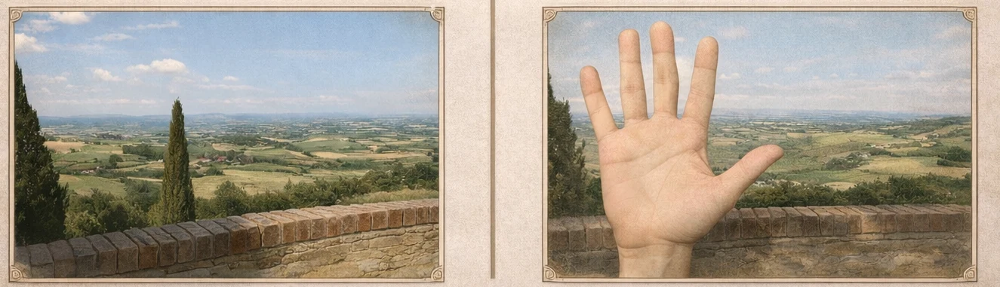
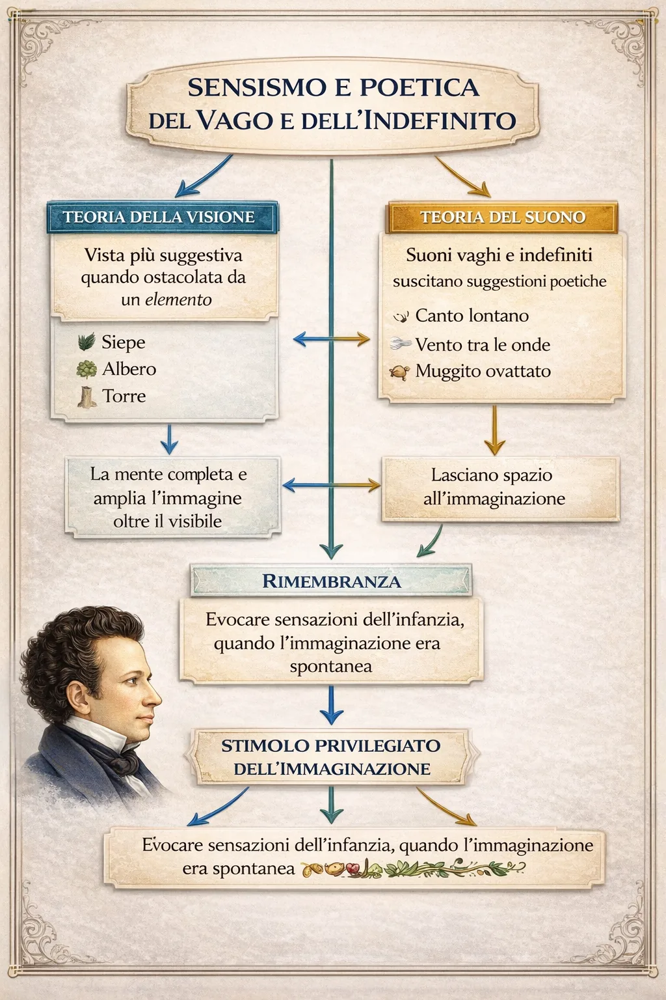
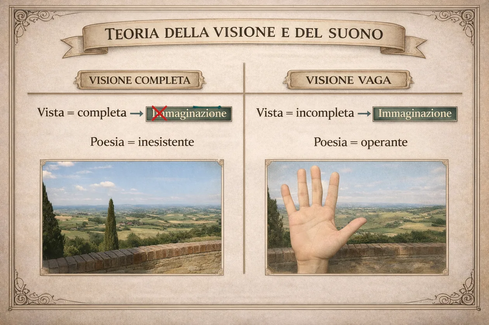

Il definito
La mente osserva un oggetto con confini riconoscibili. Conosce ciò che vede. Anche il definito può essere poetico, ma non attiva necessariamente l’effetto dell’indefinito.
Lezione 6 di 8 · La poetica
Perché una veduta incompleta può far immaginare di più?
Apri gli approfondimenti e gli esercizi ↓
Il paesaggio è lo stesso. Che cosa cambia quando una mano ne nasconde una parte?

Segui il muretto e i cipressi fino alle colline. Scegli due particolari e indica dove si trovano. Poi copri la prima veduta e passa alla seconda: che cosa potrebbe esserci nello spazio nascosto dal palmo? Due compagni possono immaginare due paesaggi diversi.
La mano è vicina, nitida. Proprio la sua presenza lascia incerto ciò che sta dietro. Qui riconosci il meccanismo del vago e dell’indefinito: un dato preciso mette in moto una rappresentazione dai confini aperti. Anche nella poesia la siepe nasconde solo una parte dell’orizzonte.
Scendi lungo le due frecce della tavola. Quale gesto della mente hanno in comune?

A sinistra compaiono una siepe, un albero e una torre. Immagina di essere davanti al tronco: puoi seguirne la corteccia con gli occhi, ma dietro resta una zona invisibile. Il possibile comincia proprio lì.
A destra trovi un canto lontano e un muggito ovattato. Odi qualcosa, eppure la sorgente ti sfugge. Puoi immaginare la persona, l’animale o la distanza che ti separa da loro.
Un suono ascoltato oggi può richiamare una sera dell’infanzia. Leopardi chiama rimembranza il riaffiorare dell’esperienza passata: il presente acquista la profondità di ciò che hai vissuto e ora ricrei.
Gli esempi a destra illustrano una teoria generale. Nell’Infinito la voce reale è il vento tra le piante vicine: il poeta la mette a confronto con il silenzio che ha appena immaginato.
Nella cultura filosofica settecentesca che influenza Leopardi, la conoscenza parte dall’esperienza sensibile: vedere, ascoltare, toccare. Ma la mente non si limita a registrare ciò che riceve: associa, ricorda, immagina.
«Sensismo» indica una tradizione filosofica, non una formula secondo la quale ogni immagine poetica sarebbe un semplice effetto automatico dei sensi.

Una percezione perfettamente delimitata ci dice che cosa c’è davanti a noi. Una percezione incompleta può suggerire ciò che sta oltre. È lì che immaginazione e desiderio di infinito trovano spazio.
La mente osserva un oggetto con confini riconoscibili. Conosce ciò che vede. Anche il definito può essere poetico, ma non attiva necessariamente l’effetto dell’indefinito.
Un orizzonte nascosto, un suono lontano, una luce incerta lasciano margini aperti: la mente può figurarsi spazi e possibilità non presenti alla vista.

Esperimento interattivo · La siepe
È l’esperienza che incontriamo in L’infinito: «questa siepe» impedisce di vedere gran parte dell’orizzonte. Proprio oltre quell’ostacolo, il poeta immagina «interminati spazi».
Anche l’udito suggerisce ciò che è lontano, nascosto o non precisamente definito: un canto che arriva da lontano, il vento tra le foglie, una voce indistinta. In L’infinito, il vento reale risveglia il confronto con il silenzio immaginato.
Ascolta · Simulazione sonora
È un suono sintetizzato dal browser per l’attività: non è una registrazione naturalistica né una ricostruzione storica.
Da una parte «quello infinito silenzio», immaginato; dall’altra «questa voce», il suono presente del vento. Il confronto conduce il pensiero dall’infinito dello spazio a quello del tempo.
Una percezione può riaprire immagini e sentimenti del passato. Per Leopardi la rimembranza, soprattutto quella legata all’infanzia, è una sorgente importante di suggestione poetica, perché restituisce esperienze filtrate dall’immaginazione.
La rimembranza è centrale nella poetica leopardiana, ma in L’infinito i procedimenti più evidenti sono la vista ostacolata, l’immaginazione dell’immensità e il confronto tra silenzio e suono. Non inventiamo ricordi infantili che il testo non nomina.
Sono parole che allargano mentalmente lo spazio e il tempo. La poesia non descrive un infinito visibile: ne costruisce un’esperienza interiore.
L’infinito è composto nel 1819. Le formulazioni più sistematiche della poetica del vago e dell’indefinito, della visione e del suono si trovano nello Zibaldone anche in anni successivi. Le usiamo per interpretare il testo, senza immaginare che Leopardi le avesse già organizzate in un manuale nel 1819.
No. Nella riflessione leopardiana la vista incompleta è una sorgente privilegiata del vago e dell’indefinito, non l’unica possibilità poetica.
Lo stormire del vento tra le piante, ascoltato realmente e confrontato con il silenzio infinito immaginato.
Perché limita la vista e allo stesso tempo permette all’immaginazione di figurarsi uno spazio senza confini.
Riferimenti: Treccani, «Giacomo Leopardi» · Treccani, «L’infinito» · Leopardi, Zibaldone (teoria del piacere, dell’indefinito e del ricordo).